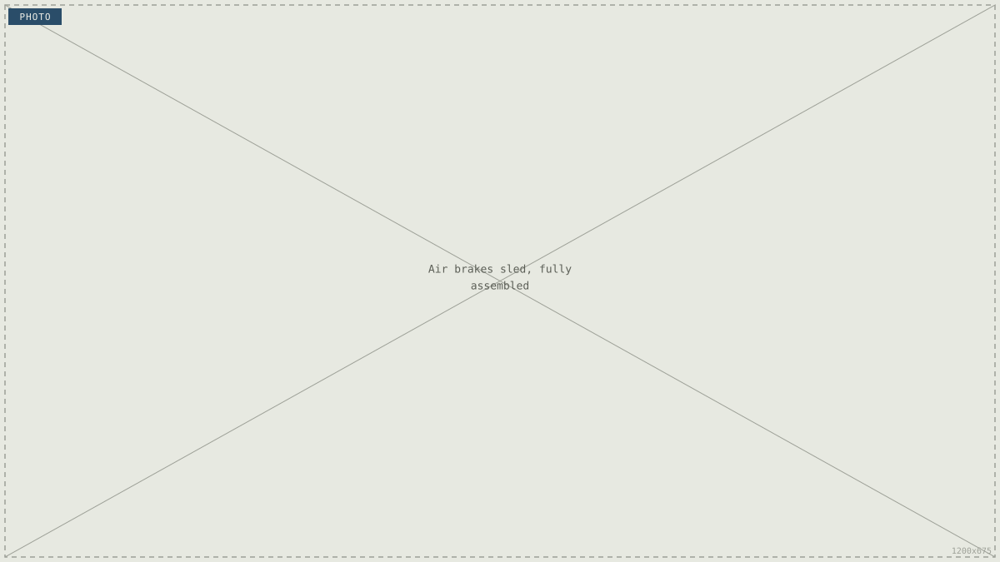
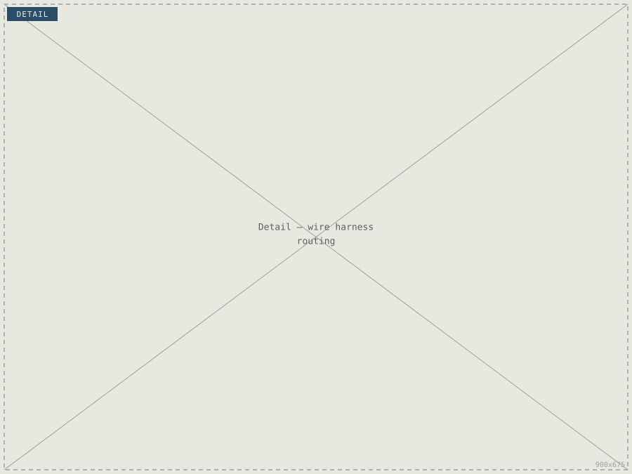
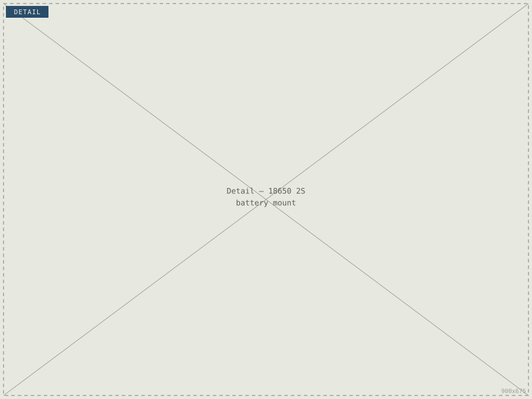
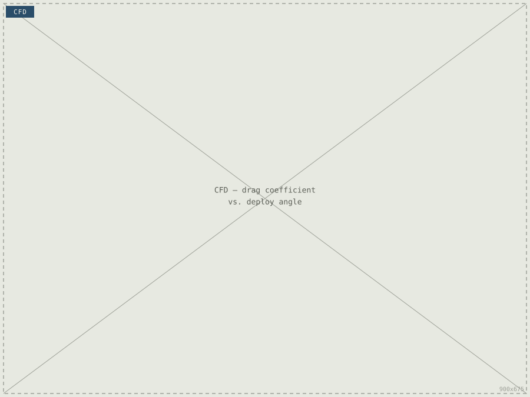
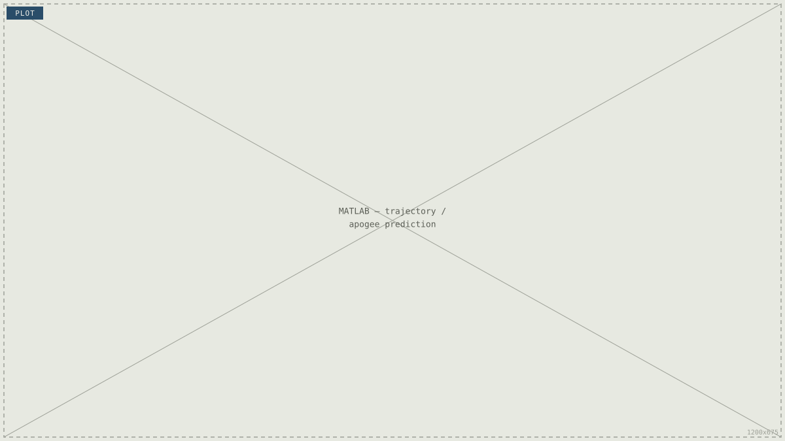

Air Brakes
An active drag system that trims apogee by deploying flaps mid-flight — redesigned here for design-for-manufacture and design-for-assembly, not just performance.

Performance was solved — assembly wasn't
The air brakes system deploys four flaps from the airframe to increase drag and trim the rocket's apogee to a target altitude, controlled by a closed-loop algorithm running on the flight computer. The aerodynamic and control side of the system was already working; my focus was taking the sled itself — the physical thing a teammate has to build, wire and swap batteries on at the range — and redesigning it so it was faster and less error-prone to assemble.
What the redesign had to fix

Harness routing
Wire harness pass-through holes repositioned to shorten cable runs and remove awkward routing around structural members.

Battery mounting
Battery bay redesigned to securely hold an 18650 2S pack and allow tool-free swaps during flightline operations.

Print & material choice
[X] filament selected for 3D-printed structural brackets to improve [layer adhesion / impact resistance] under flight loads.

Aero performance
Flap geometry and deployment angle validated by CFD to deliver up to 20% of active apogee control.
Design-for-manufacture & assembly
[Placeholder — walk through the actual before/after of the sled: where the old harness holes were and why they were a problem, where you moved them, and how you decided on the battery bay geometry. This is the "delve deeper" content that isn't on the resume — be specific about the change, not just the result.]
Repositioning the harness pass-through holes and redesigning the battery bay cut sled assembly time by [X]%. [Placeholder — add how you measured this: timed assembly by a teammate unfamiliar with the sled, comparison against the previous revision, etc.]
Aerodynamic & control validation
Flap drag coefficient across deployment angle was modelled in ANSYS Fluent, feeding a MATLAB trajectory model used to size the control authority needed to hit target apogee. [Placeholder — add a sentence on what the CFD/MATLAB results actually showed, e.g. achieved apogee error margin.]

Build & assembly
[Placeholder — describe the print settings/orientation for the structural brackets, any inserts or fasteners used, and how the sled goes together on the day: order of operations, tools needed, anything that reduced technician error.]
From the bench to flight
[Placeholder — describe ground testing of flap actuation and any flight results: did the system trim apogee as predicted? Include a specific number if you have one, e.g. "apogee within [X] ft of target".]
| Rev | Test | Result | Date |
|---|---|---|---|
| 01 | Ground actuation test | [Pass / result] | [date] |
| 02 | Assembly time trial (new vs. old sled) | [X]% faster | [date] |
| 03 | Flight test — apogee control | [result] | [date] |
What this proved, what's next
[Placeholder — reflect on the outcome: faster, less error-prone assembly at the range, and what you'd change in the next revision — e.g. further reducing part count, or a different battery form factor.]
← Back to all projects